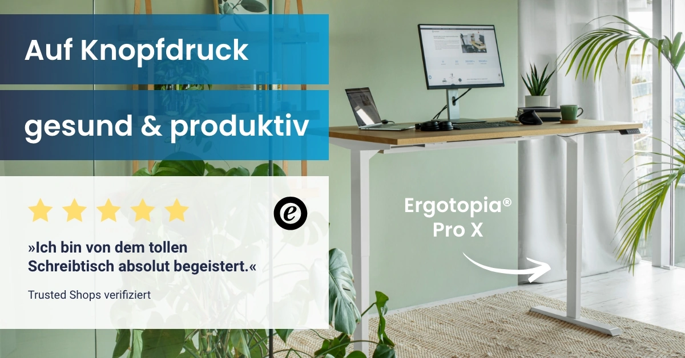
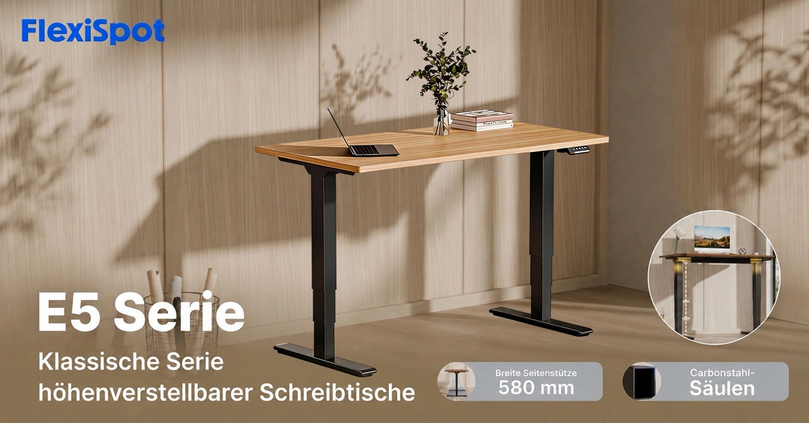

FW-C05 · 同一个人的坐站工作节奏
评分：92/100，排名4，Top 10 / 第一批。分项：{'product_30': 30, 'need_25': 25, 'reference_20': 16, 'difference_15': 12, 'feasibility_10': 9}。评分是测试潜力，不是效果预测。
产品：Economy Solid 白色 120×60 cm。
用户：电脑工作时间较长的居家办公者。
需求：方便改变工作姿势，不中断同一任务。
卖点：电动升降与两组记忆高度。
机会类型：一：成熟创意的新表现。
参考什么：参考产品与操作解释并置；竞品静帧没有证明转换效果。
为什么：DGUV支持坐、站、移动交替；P1有两组记忆高度。不能承诺治疗疼痛或全天站立更健康。
如何差异化：用同一房间、同一人、同一桌面任务的两个静帧体现真实高度差。
场景：浅灰墙小书房，背景有书柜而非窗帘绿植组合。
构图：等宽双联图，左坐右站，机位和桌子透视固定；桌面设备、人物服装、镜像方向一致。渠道改版：PMax版单独使用站姿或坐姿的完整单幅使用画面，不上传双联拼图。
人物及动作：约32岁办公者在左图坐着输入、右图站着继续同一任务；前臂自然，视线落在屏幕上。
渠道：Meta Feed主方案；Google PMax需另做干净单幅版本。比例：1:1、1.91:1。德语主题：Sitzen. Stehen. Im Wechsel arbeiten.。
资格依据：一体桌板；单电机；两组记忆高度；白桌白架；规格区承重70 kg；高度73–118 cm不含桌板。
不能添加的宣称：描述段噪声<50 dB与规格≤55 dB不一致，创意不引用分贝；不要混用Economy拼接板。
证据边界：有A类实际图片参考；具体原创场景和转化效果尚待测试。图片参考体现视觉方法，不构成竞品效果数据。需求证据：N2+P1；不宣称健康疗效。
参考原图

ERGO-GOOG-043ERGO-GOOG-043 · Ergotopia · Google · 完整导出广告画面
原广告来源。详情日期与德国地区已核验。

FLEX-GOOG-041FLEX-GOOG-041 · FlexiSpot · Google · 完整导出广告画面
原广告来源。德国日期筛选列表已核验；单条首次/最后日期未读取。